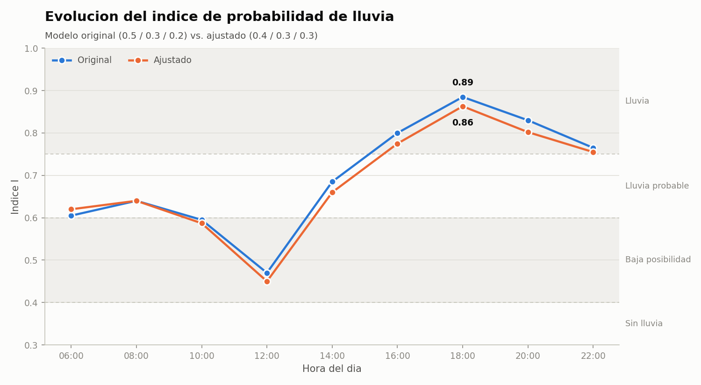
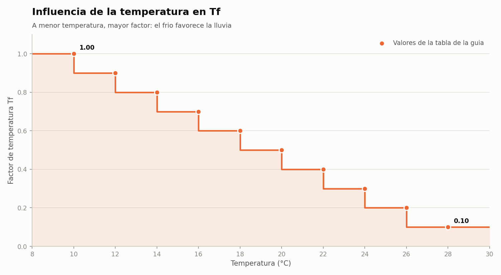
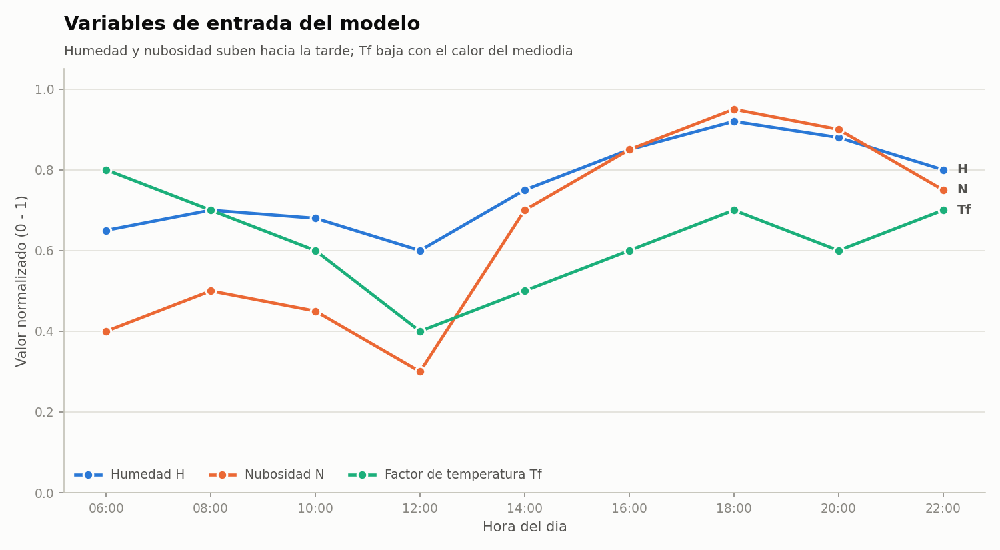
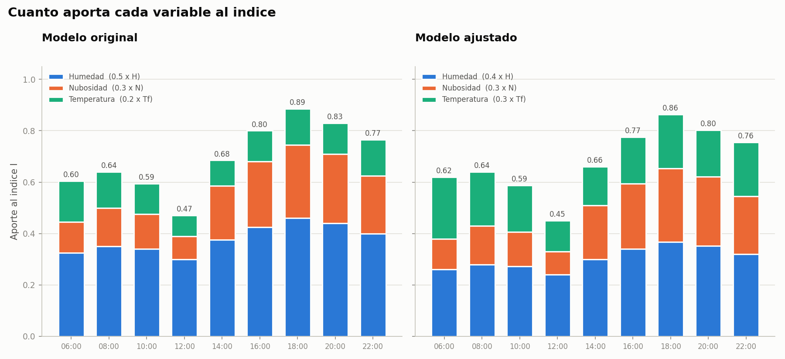

|
FEIRNNR - Carrera de Computación
| ||||||||||||||||||||||||||||||||||||||||||||||||||||||||||||||||||||||||||||||||||||||||||||||||||||||||||||||||||||||||||||||||||||||||||||||||||||||||||||||||||||||||||||||||||||||||||||||||||||||||||||
Reporte Técnico de Actividades
|
| Nombre del estudiante(s) | Ivett Anahi Zaragocin Mora |
| Asignatura | Simulación |
| Ciclo | 5 |
| Unidad | U1: Introducción a la Simulación |
| Resultado de aprendizaje de la unidad | R1. Aplica análisis estadísticos de los datos de la Simulación para mejorar la calidad de los resultados, bajo los principios de solidaridad, transparencia, responsabilidad y honestidad. |
| Práctica Nro. | 01 |
| Título de la Práctica | Construcción y simulación computacional de un modelo matemático |
| Nombre del Docente | José O. Guamán Q. |
| Fecha | 01 y 02 de octubre de 2026 |
| Horario | Jueves 10h30 a 11h30 · Viernes 07h30 a 09h30 |
| Lugar | Aula |
| Tiempo planificado en el Sílabo | 3 horas |
Comprender el proceso de construcción de un modelo matemático y analizar su comportamiento mediante Python.
Modelo matemático. Es una representación simplificada de un fenómeno real mediante variables, parámetros y relaciones (ecuaciones o reglas) que permite explicar o predecir su comportamiento. La simulación consiste en ejecutar ese modelo en un computador para observar cómo responde ante distintas entradas.
Variables y parámetros. Las variables cambian con cada observación del sistema; en esta práctica son la humedad, la nubosidad y la temperatura de cada hora. Los parámetros son valores fijos que definen el modelo: los pesos de cada variable y los umbrales de la tabla de reglas.
Normalización. Para combinar magnitudes distintas se llevan a una escala común de 0 a 1. La humedad y la nubosidad, expresadas en porcentaje, se dividen para 100. La temperatura se transforma en el factor Tf mediante la tabla de la guía: a menor temperatura, mayor factor.
Promedio ponderado. El índice de lluvia es una combinación lineal de las tres variables normalizadas. Si los pesos suman 1, el índice también queda entre 0 y 1 y puede interpretarse como una probabilidad relativa:
I = 0.5·H + 0.3·N + 0.2·Tf
El valor de I se clasifica con la tabla de reglas: I < 0.40 sin lluvia; 0.40 ≤ I < 0.60 baja posibilidad; 0.60 ≤ I < 0.75 lluvia probable; I ≥ 0.75 lluvia.
model.py contiene la fórmula, la tabla de Tf y la clasificación; controller.py contiene los datos de la guía; view.py genera las tablas y gráficas; main.py une el flujo.| Hora | Humedad | Nubosidad | Temp. | H | N | Tf | Índice | Estado |
|---|---|---|---|---|---|---|---|---|
| 06:00 | 65 | 40 | 14 | 0.65 | 0.40 | 0.80 | 0.60 | Lluvia probable |
| 08:00 | 70 | 50 | 16 | 0.70 | 0.50 | 0.70 | 0.64 | Lluvia probable |
| 10:00 | 68 | 45 | 18 | 0.68 | 0.45 | 0.60 | 0.59 | Baja posibilidad |
| 12:00 | 60 | 30 | 22 | 0.60 | 0.30 | 0.40 | 0.47 | Baja posibilidad |
| 14:00 | 75 | 70 | 20 | 0.75 | 0.70 | 0.50 | 0.68 | Lluvia probable |
| 16:00 | 85 | 85 | 18 | 0.85 | 0.85 | 0.60 | 0.80 | Lluvia |
| 18:00 | 92 | 95 | 16 | 0.92 | 0.95 | 0.70 | 0.89 | Lluvia |
| 20:00 | 88 | 90 | 17 | 0.88 | 0.90 | 0.60 | 0.83 | Lluvia |
| 22:00 | 80 | 75 | 15 | 0.80 | 0.75 | 0.70 | 0.77 | Lluvia |
| Hora | Humedad | Nubosidad | Temp. | H | N | Tf | Índice | Estado |
|---|---|---|---|---|---|---|---|---|
| 06:00 | 65 | 40 | 14 | 0.65 | 0.40 | 0.80 | 0.62 | Lluvia probable |
| 08:00 | 70 | 50 | 16 | 0.70 | 0.50 | 0.70 | 0.64 | Lluvia probable |
| 10:00 | 68 | 45 | 18 | 0.68 | 0.45 | 0.60 | 0.59 | Baja posibilidad |
| 12:00 | 60 | 30 | 22 | 0.60 | 0.30 | 0.40 | 0.45 | Baja posibilidad |
| 14:00 | 75 | 70 | 20 | 0.75 | 0.70 | 0.50 | 0.66 | Lluvia probable |
| 16:00 | 85 | 85 | 18 | 0.85 | 0.85 | 0.60 | 0.77 | Lluvia |
| 18:00 | 92 | 95 | 16 | 0.92 | 0.95 | 0.70 | 0.86 | Lluvia |
| 20:00 | 88 | 90 | 17 | 0.88 | 0.90 | 0.60 | 0.80 | Lluvia |
| 22:00 | 80 | 75 | 15 | 0.80 | 0.75 | 0.70 | 0.76 | Lluvia |

El índice es bajo al mediodía (0.47 a las 12:00, cuando hace más calor y hay menos nubes) y sube por la tarde hasta su máximo a las 18:00 (0.89), cuando la humedad y la nubosidad superan el 90 %. Desde las 16:00 el modelo predice lluvia en ambas versiones.



Influencia de los parámetros. La humedad es la variable que más aporta, porque tiene el peso más alto. Al pasar 0.1 de peso de la humedad a la temperatura, el índice baja ligeramente en casi todas las horas (por ejemplo, a las 16:00 pasa de 0.80 a 0.77). Esto ocurre porque Tf es menor que H en esas horas. El estado final casi no cambia, porque los datos del día son consistentemente húmedos y nublados. El modelo es más sensible a la humedad y a la nubosidad que a la temperatura.
Nota: las preguntas 3 a 5 se refieren al modelo de crecimiento exponencial P(t) = P0·ert y se responden en términos generales.
¿Qué es un modelo matemático?
Es una representación simplificada de un fenómeno real mediante variables, parámetros y relaciones matemáticas, que permite explicar o predecir su comportamiento. En esta práctica, la fórmula del índice representa la posibilidad de lluvia a partir de tres variables atmosféricas.
¿Cuál es la diferencia entre variable y parámetro?
Una variable cambia con cada observación del sistema (H, N y Tf cambian hora a hora). Un parámetro es un valor fijo que define la forma del modelo durante la simulación (los pesos 0.5, 0.3 y 0.2 y los umbrales 0.40, 0.60 y 0.75). Cambiar un parámetro significa cambiar el modelo, como se hizo en el modelo ajustado.
¿Qué representa P₀?
Es la condición inicial: el valor de la magnitud (por ejemplo, la población) en el instante t = 0, desde el cual el modelo calcula su evolución.
¿Qué ocurre cuando r < 0?
El término ert disminuye con el tiempo, por lo que la magnitud decrece de forma exponencial y se acerca a 0 sin llegar a ser negativa.
¿Qué limitaciones tiene el modelo exponencial?
Supone una tasa constante y recursos ilimitados, por lo que crece sin límite. No considera factores externos que frenan el proceso (capacidad de carga, competencia, eventos aleatorios), así que solo es realista en intervalos cortos.
[1] J. O. Guamán Q., “Diapositivas semana 1 – Introducción a la Simulación,” Universidad Nacional de Loja, 2026.
[2] A. M. Law, Simulation Modeling and Analysis, 5th ed. New York, NY, USA: McGraw-Hill, 2015.
[3] C. R. Harris et al., “Array programming with NumPy,” Nature, vol. 585, pp. 357–362, 2020.
[4] J. D. Hunter, “Matplotlib: A 2D graphics environment,” Computing in Science & Engineering, vol. 9, no. 3, pp. 90–95, 2007.
El código completo está en el repositorio github.com/ivecanahi/simulacion-practicas, carpeta Unidad1/practica01. Se ejecuta con:
pip install -r requirements.txt cd Unidad1/practica01 python3 main.py
Fragmento principal del modelo (model.py):
def compute_index(humidity, cloudiness, temp, weights):
w_h, w_n, w_tf = weights
h = normalize(humidity)
n = normalize(cloudiness)
tf = temperature_factor(temp)
index = w_h * h + w_n * n + w_tf * tf
return h, n, tf, index